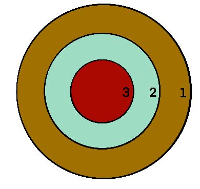

2.
Draw a dango on a chalkboard, wall or wide board;

Sections of a Dango
3.
Stand at the playing mark at a distance of 10 to 15 steps or 3 meters to 5 meters;
4.
Throw the tennis ball aiming to hit the center of the dango;
5.
The points are determined by where your ball hit on the dango. The outer circle 1 point, middle circle 2 points, and inner circle 3 points;
6.
After three attempts, give a turn to another player; and
7.
Switch and start throwing the tennis ball by bouncing it.